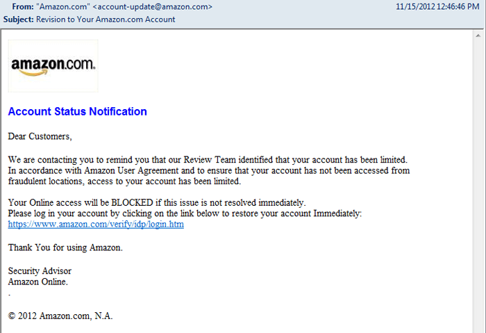

ESafety
Being safe online
Today we are going to be looking at:
- What makes personal information?
- Positive vs. negative online behaviour?
- Passwords to protect us
- How to report if something is not right
Try It
- Last lesson we watched a video on consequences. However we now know the golden rules. Can you remember them? Spend two minutes and discuss the rules with your partner.
What is personal information?
Look at this girl's social network account:
Document It
List some of the things that she has on her profile and separate them into:
- safe and responsible networking
- potentional unsafe or risky behaviour.
Here's one to get you started
- E.g. Use of a cartoon for a profile picture - safe
Badge It: Silver
- Upload your work to BourneToLearn.com showing the features of the girl's profile as safe and unsafe.
Being a good digital citizen:
Here are some more examples of unsafe behaviour:
Learn it
- Read through these behaviours and click on the links and watch the videos.
Using mobile phones in classrooms
- In many schools using mobile phones is against school rules, at least during lessons.
- However, at BGS, you may have had good experience of using your mobile phone in Systems and Control to help with instructions.
- The item is not bad per se it is what you do with it. Use it wisely.
Visiting unknown websites included in emails from people you don’t know

- There are too many unknown factors in this above email. Both the sender of the email and the link in the email are unknown.
- Viruses can be downloaded, without your knowledge, from websites. Using up-to-date anti virus software will help keep your computer as safe as possible but don't click on anything you are not sure about.
- If in doubt ask an adult or www.childnet.com/sorted for more information.
Forwarding on nasty texts about other pupils
- Why are you forwarding it? Is it to report what is going on? That's what a good citizen would do.
- Clearly passing it on to make the matter worse is not the correct thing. Think before you act. Once it is done… it is done.
- This is a form of bullying called cyberbullying. It is not 'banter' or harmless - it is a crime.
Forwarding on chain emails
-What is a chain letter/email? A chain emails is a message sent to someone asking them to pass on a message to as many people as possible.
- They are often hoaxes or urban legends. Harmless fun or a nuisance? The best policy… break the chain and delete them upon receipt.
Letting your mates know about a site that helps with history coursework
- A great use of technology and as we all know sharing is caring! However, is everything on the World Wide Web true?
- Check out this site. What do you think?
Uploading photos of your mates on to a social network
- Photos are often a large part of young people’s online experiences and many of you are happy for your images to be posted online. You have heard that there are photos that have been posted about you that they are unhappy about. Do you know how to solve this?
- Many social networks make available reporting facilities for abusive photos – make sure you know how to do it and do report if something is not right.
Always accepting anyone who asks to be your buddy on instant messenger or a social network e.g. Myspace/Facebook
- It is incredibly important that you spend time reflecting on who you would accept into your online life. Not everyone is who they appear to be…
Ignoring messages from your anti virus software saying that updates are available or out of date
- An important aspect of internet security is keeping up with updates to ensure the best protection for computers.
- Why? - check out this site.
Having online discussions, with someone you don’t know, about private things
- The internet can be an environment where users feel anonymous and they can become involved in conversations of a private matter with people they have never met.
- This can be a positive thing in terms of online counselling services such as Childline. However, some people engage children and young people in private discussions through flattery, persuasion and manipulation.
- You need to be aware of this and make sure that your private discussions are done with trustworthy, qualified people.
Play It:
- Write down the answers to the questions as you play.
- Click the link and go to 'Pic your friends' - How can we spot a friend or a bully/catfish?
- From Crowd Surfing - what were the three rules before passing things on to someone else?
- From DropBox - What makes something safe? What three courses of action do they suggest? Screenshot your time on the hard setting.
- Flip and Fix - On the hard setting - What are the 8 'safe' responses?
Badge It: Gold
- Upload your answers from the quiz section to BourneToLearn.com
Password Protection
- OK; now let's learn about passwords.
Research It
- What makes a good password?
- Search online and find 5 top tips.
- Finally here is an informative quiz.
Badge It: Green Pen Task
- Combine your five top tips and information you found from the quiz.
- Upload your findings to BourneToLearn.com.
- Remember this is for the green pen matter badge so your teacher will also be looking at your use of green pen matters i.e. spelling, grammar, punctuation etc.
Reporting concerns
Know It
- If you are ever worried, uncomfortable or upset about something online then the key thing to do is to seek help and tell someone. This maybe a trusted adult or friend.
- However there are other ways in which you may choose to seek help with online issues.
- This includes ways you can challenge unacceptable behaviour online.
Useful links:
- This Childnet site shows how to report on various sites.
- CEOP is part of the National Crime Agency and runs the 'thinkuknow.co.uk' website.
- NSPCC's Childline service is an important one to be aware of as an anonymous way of discussing problems and seeking help.
These resources were made using the Childnet International Online Safety in the Computing Curriculum document.